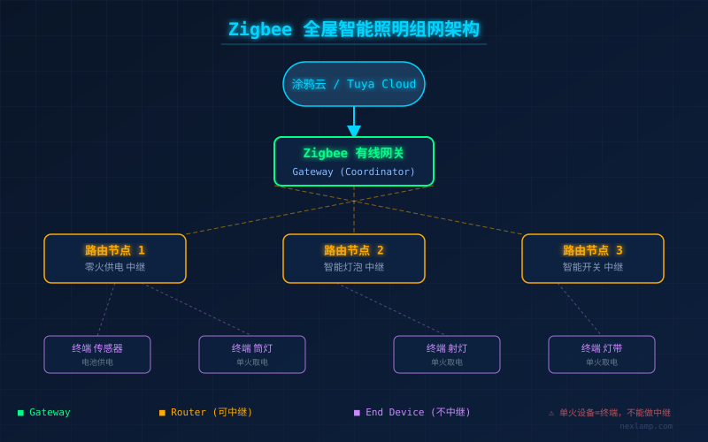
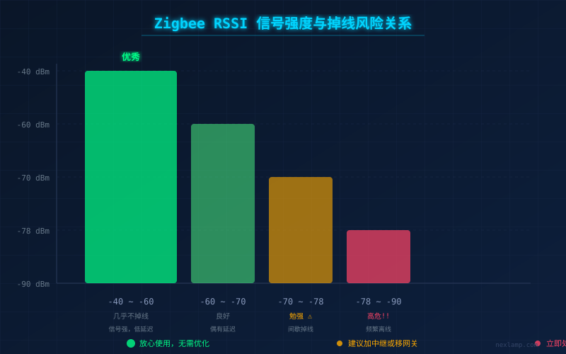
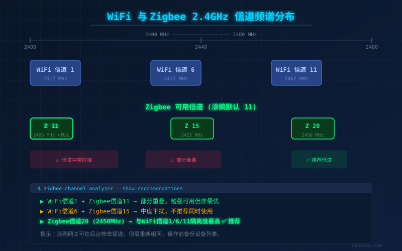

为什么你的智能灯半夜总失联？
凌晨两点，你轻声说了句"关灯"，灯没反应。打开APP一看，三盏灯显示"设备离线"。拔插网关电源，等三分钟，恢复了两盏——剩下那盏还是灰的。
这不是个别现象。无论用的是涂鸦Zigbee、米家BLE Mesh还是HomeKit，设备随机离线是智能家居用户投诉最多的问题。本文基于真实故障案例，从四个维度给出系统排查方案。

一、网关位置是第一道坎
Zigbee工作在2.4GHz频段，穿墙能力有限。很多人把网关插在电视柜角落，围着路由器、机顶盒、金属柜体——信号衰减至少20dBm。
排查方法：打开涂鸦APP或Zigbee2MQTT面板，查看每台设备的RSSI（接收信号强度）。-60dBm以上算优秀，-65到-75dBm勉强可用，低于-78dBm的设备掉线风险极高。
典型案例：用户家里客厅灯RSSI是-55dBm，稳如狗；最远卧室灯-75dBm，每周掉一次。在走廊中间加了一个中继灯泡（零火供电的路由器节点），功率不大但充当了信号跳板，卧室RSSI涨到-62dBm，两个月没掉过。

| RSSI范围 | 评级 | 说明 |
|---|---|---|
| -40 到 -60 dBm | 优秀 | 信号强，几乎不掉线 |
| -60 到 -70 dBm | 良好 | 正常使用，偶有延迟 |
| -70 到 -78 dBm | 勉强 | 间歇掉线，需关注 |
| -78 dBm以下 | 高危 | 频繁离线，必须优化 |
解决方案：
- 网关尽量放房屋中心位置，离地面1米以上
- 远离WiFi路由器、微波炉、金属机柜至少1米
- 大型户型或复式用有线网关+分楼层部署中继路由节点
- 零火供电的设备天然充当路由节点，单火设备不具备中继能力
二、WiFi和Zigbee在同一条信道打架
Zigbee和2.4GHz WiFi共享同一个无线电频谱。如果你家WiFi恰好跑在Zigbee占用的信道上，两个信号互相踩踏，设备掉线就成了家常便饭。
Zigbee信道：涂鸦默认是11信道（2405MHz），米家也是11信道。WiFi信道1对应2412MHz，信道6对应2437MHz，信道11对应2462MHz。

关键规则：
- Zigbee 11+15+20 对应 WiFi干扰最小（避开1、6、11的峰）
- 如果你家WiFi用信道1，Zigbee用11也还行
- 如果WiFi用信道6，Zigbee用15隔离度最高
- 千万别让WiFi和Zigbee挤在同一频段
排查方法：手机下载WiFi Analyzer，看看邻居和你家WiFi都占用了哪些信道，然后避开最拥堵的频段。在涂鸦网关后台可以修改Zigbee信道（需要重新组网，操作前备份设备列表）。
三、驱动电源是隐形的罪魁祸首
很多掉线问题跟无线信号完全没关系——是驱动电源的锅。
三种典型问题：
驱动功率不匹配。比如7W驱动带12W灯，满载运行时电压纹波变大，导致Zigbee模块供电不稳，间歇重启。表象是"信号突然消失又在原位置出现"——这不是掉线，是设备反复重启。
单火取电不足。单火开关通过灯具取电，LED灯功率小到一定程度（通常<5W），流过开关的电流不足以维持Zigbee模块工作。表面是"掉线"，实际是设备根本没电。
调光器兼容性问题。可控硅调光驱动和Zigbee模组共用电源通路时，调光斩波产生的谐波污染会影响模组正常工作。用示波器看输出电压波形有明显毛刺的话，换DALI或0-10V调光方案。
快速判断供电问题：如果掉线设备在掉线后几秒到几分钟内自动恢复，大概率是供电瞬间失稳导致模组重启。纯无线信号导致的掉线恢复时间更长或不自动恢复。
四、设备固件和网络拓扑
涂鸦Zigbee模组固件版本差异可能导致组网兼容性问题。如果你的设备来自不同厂商，务必确认固件一致。
实用建议：
- 定期检查涂鸦APP里的固件更新
- 大型组网（>30个Zigbee设备）优先用有线网关而非WiFi网关
- 设备迁移后重新组网（长按复位键5秒），不要让旧拓扑残留
- 如果某个设备持续离线，单独复位+重新配对通常能恢复
总结
智能灯掉线不要急着换设备。按"网关位置 → WiFi信道 → 驱动电源 → 固件/拓扑"的顺序逐一排查，90%的问题都能在前两步解决。
记住几个关键数字：
- RSSI > -60dBm = 放心用
- 零火设备才能做中继
- Zigbee和2.4G WiFi至少隔开20MHz
- 驱动功率留15%余量
这不是玄学，是物理。信号有损耗，频谱有容量，电源有纹波——理解了这些，智能灯就不会再半夜失联了。